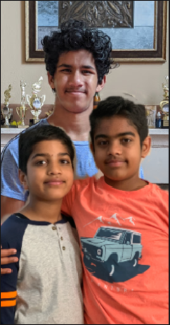

VasudaFam; The world is a family
Covid Outreach

Hello All.
We are a group of siblings/friends from Fremont, California reaching out to you with a humble request for your support in helping our cause.
In a crisis like the current Coronavirus that no one has ever faced before, many groups of people have been hit hard, some more than others. We feel strongly that our duty as a society is to help and support those in need any way we can. These include hospital workers, nursing homes, and homeless shelters.
Our goal is to create individual kits with supplies customized for each of the above groups including food, masks, goggles and other important items and donate them to local hospitals, nursing homes, and shelters. The supplies are specific to each location and group, with hospitals receiving more medical supplies and shelters receiving more food as an example. We will be calling each of these locations to assess their specific needs and build the kit accordingly.
We will also write motivational and thank you letters to help lift up their spirits and assure them we as a society will get through this together.
Here is a sample kit for our hospital workers.
Hair masks - 5 per kit
Letter for kits- 1 per kit
N-95 Mask /Regular Masks- 5 masks per kit-accounted for
Gloves - 5 pairs per kit
Letter-1 per kit-in progress
We would really appreciate your support in helping us procure the supplies needed for these kits, and also spread the word.
Regards and Thanks
Arnav,Ajay and Anvith !
Kits for Hospital workers
Hair mask- 5 per kit
Reusable Face shields with films - 1 per kit
N-95 Mask /Regular Masks- 5 masks per kit-accounted for
Gloves - 5 pairs per kit
Letter-1 per kit--in progress
Who- Kits go to ER doctors or people involved with disease
What- supplies listed above
When- TBD, we will find out in the call
Where-TBD, we will find out in the call
Why- To help keep the medical workers safe
How- We are planning a gofundme to buy supplies and create kits
Hospitals Near me
-Washington Hospital
-Fremont Hospital
Kits for Homeless Shelters
Regular Masks - 10 per kit-accounted for
Letter - 1 per kit-in progress
Canned Soup- 5 per kit
Homeless shelters near me
-Abode Services
-Sunrise Village
-Shelter Network
Kits for Nursing homes
Regular Masks - 10 per kit-accounted for
Video on how to order food online- 1 quantity
Letter- 1 per kit-in progress
Canned Soup-- 5 per kit
Nursing homes near me
-Park Central Care & Rehab Center
-Crestwood Treatment Center
-Fremont Healthcare center
Kits for Food Banks
Letter/Card/Note - 1 per kit
Food Bank near me
-Tri-City Volunteers Food Bank + Thrift Store
Nursing homes Kit
Item
Cost(per unit)
Quantity
Cost(total)
Face Mask
50 cents each
10
$5
Canned soup
$2 per can
4
$8
Total per kit
$20
Food banks Kit
Item
Cost(per unit)
Quantity
Cost(total)
Total per kit
$7
Homeless Shelters kit
Item
Cost(per unit)
Quantity
Cost(total)
Face Mask
50 cents each
10
$5
Canned soup
$2 per can
5
$10
Total per kit
$22
Hair masks-https://www.amazon.com/disposable-clipped-cover-salon-spray/dp/B00L0C78FC/ref=sr_1_3?dchild=1&keywords=hair+cover+medical&qid=1588133577&refinements=p_85%3A2470955011&rnid=2470954011&rps=1&sr=8-3
Resubale Face shields with films- https://www.amazon.com/Medical-Anti-fog-Adjustable-Replaceable-Protective/dp/B085PQ696R/ref=sr_1_5?crid=1P2IQZMVOP84A&dchild=1&keywords=face+shield+reusable&qid=1588134182&refinements=p_85%3A2470955011&rnid=2470954011&rps=1&sprefix=face+shield+re%2Caps%2C241&sr=8-5
N-95 Mask /Regular Masks- 5 masks per kit-accounted for
Gloves -://www.amazon.com/Profession-Disposable-Thickness-Convenient-Dispenser/dp/B0875N5NHZ/ref=sr_1_16?dchild=1&keywords=nitrile+gloves+latex+free&qid=1588133192&refinements=p_85%3A2470955011&rnid=2470954011&rps=1&sr=8-16
Hand Sanitizer- 1 per kit-unavailable-(being prioritized for doctors and government)